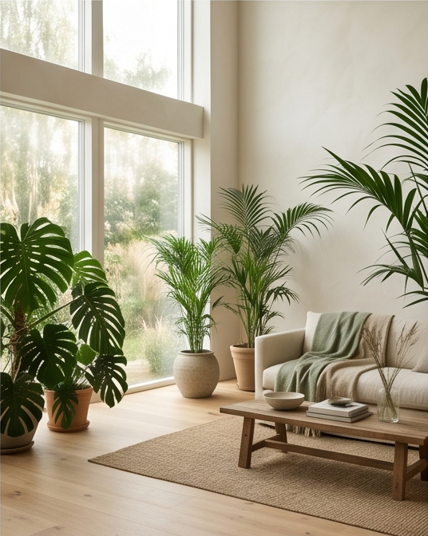
01
Biofílico
O verde como estrutura, não como enfeite. Madeira viva, luz filtrada, ar.
A Zenon trabalha na interseção entre imóveis, ambientes e identidade. Cada espaço é lido por três dimensões — estilo, material e momento — antes de qualquer recomendação.
Seis vocabulários estéticos para descrever um ambiente sem reduzi-lo a uma tendência.
Doze matérias-primas que definem peso, temperatura e textura do espaço.
Seis cenas reais de habitar — porque um espaço só existe quando alguém o usa.
Estilos não são fórmulas. São pontos de partida para entender o que um ambiente comunica antes mesmo de ser mobiliado.

O verde como estrutura, não como enfeite. Madeira viva, luz filtrada, ar.
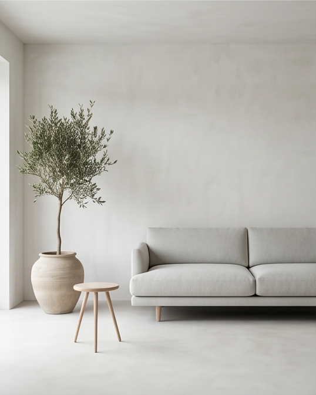
Subtração como método. Cada objeto presente porque é necessário.
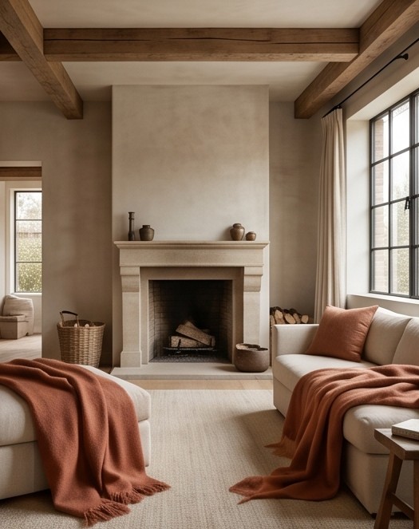
Tons quentes, texturas macias, luz baixa. Espaço para ficar em silêncio.
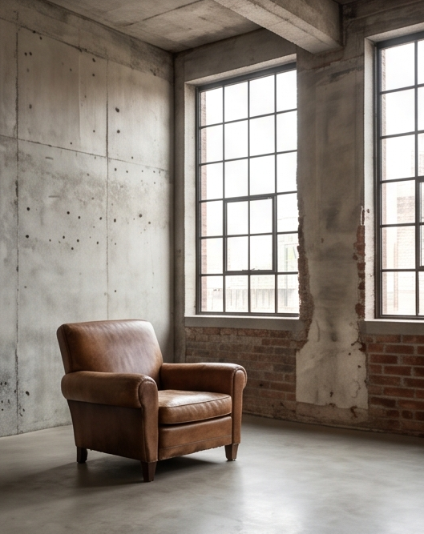
Concreto, ferro, vidro. A estrutura à mostra, sem disfarce.
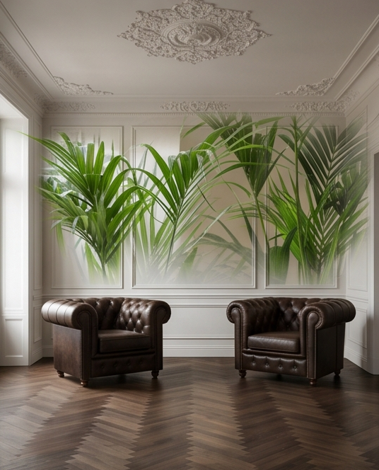
Proporção, simetria, repertório. Um repertório que envelhece bem.
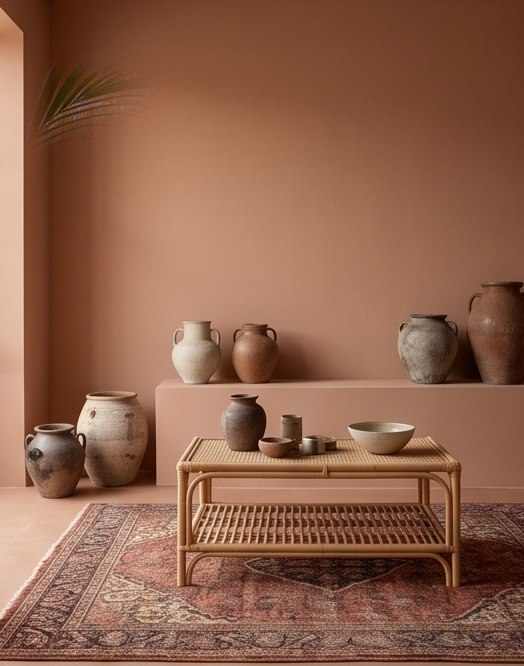
A marca da mão. Pequenas irregularidades como assinatura.
Antes de cor ou forma, o material decide o peso do ambiente. Esta é a paleta tátil da Zenon.
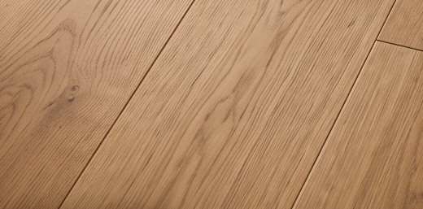
Calor leve, luz que rebate.
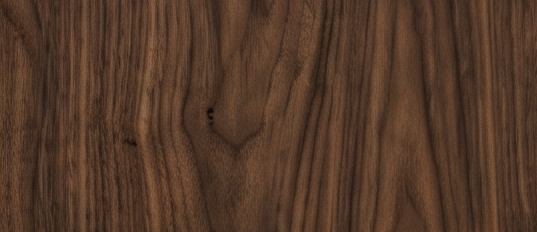
Densidade, sombra, repouso.
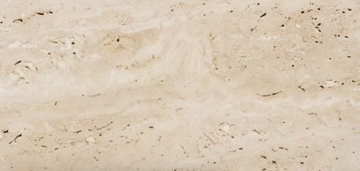
Permanência. Tempo geológico no ambiente.
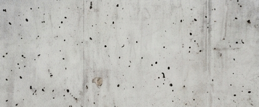
Superfície neutra que estrutura tudo ao redor.
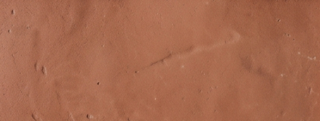
Terra cozida. Imperfeição como acabamento.
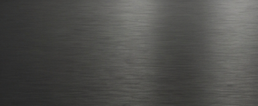
Linha precisa, reflexo controlado.
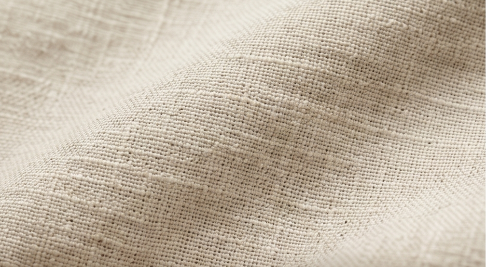
Trama natural, queda leve, frescor.
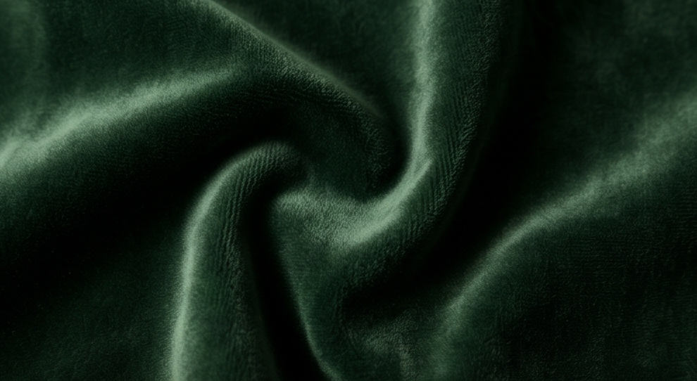
Profundidade tátil. Luz que se acomoda.
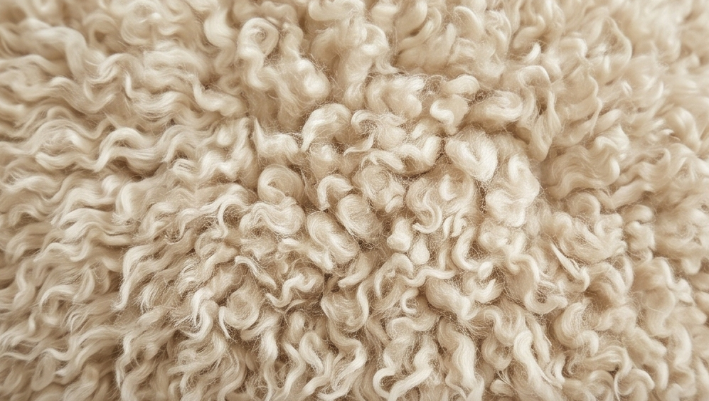
Volume macio. Textura como gesto.
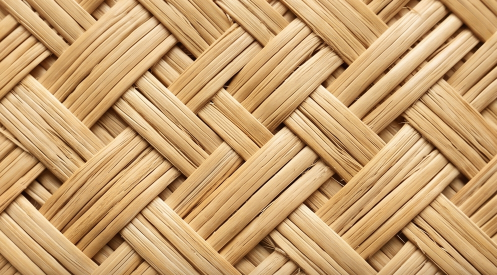
Trançado vivo. Memória rural na peça contemporânea.
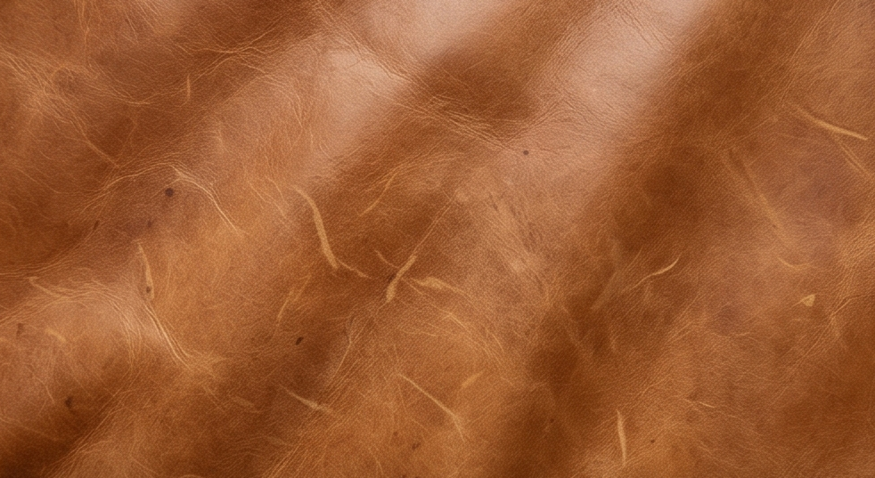
Material que envelhece junto com a casa.
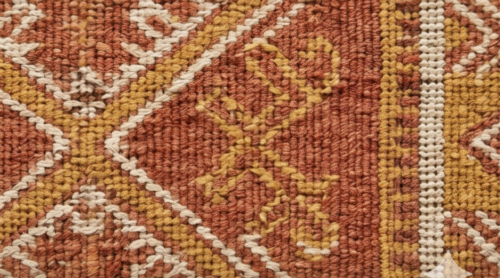
Padronagem como acento. Usar com economia.
Um ambiente só termina de existir quando alguém o habita. Estes são os momentos que a Zenon projeta para acontecer.
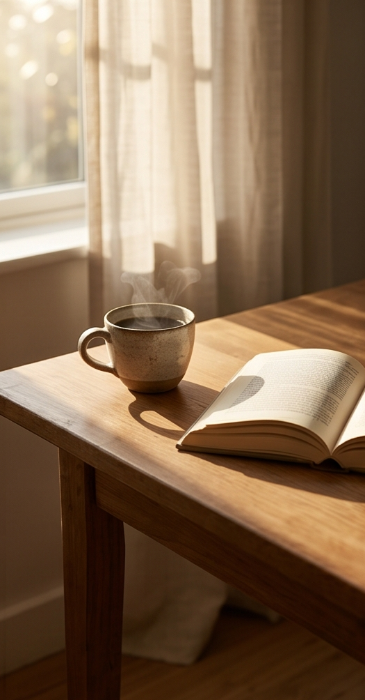
Luz crua, ritmo lento, café na mão.
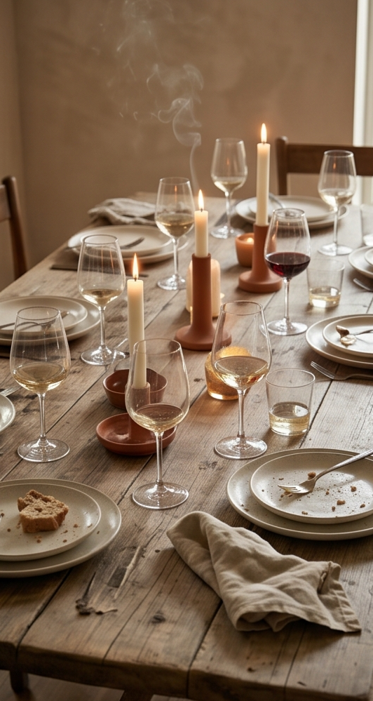
Espaço que comporta gente e som sem perder o eixo.
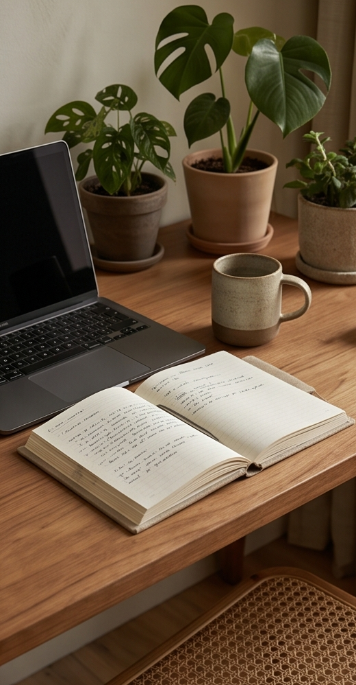
Concentração possível dentro de casa.
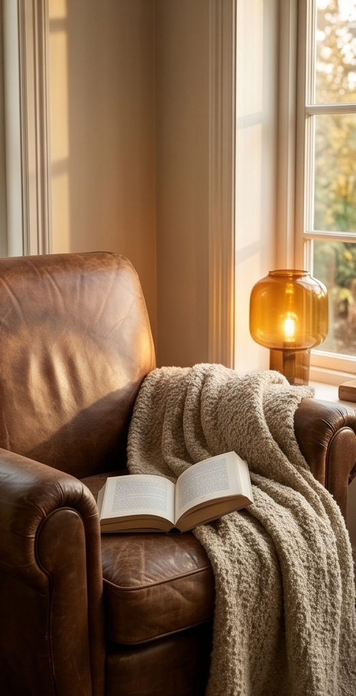
Canto, luz pontual, tempo suspenso.
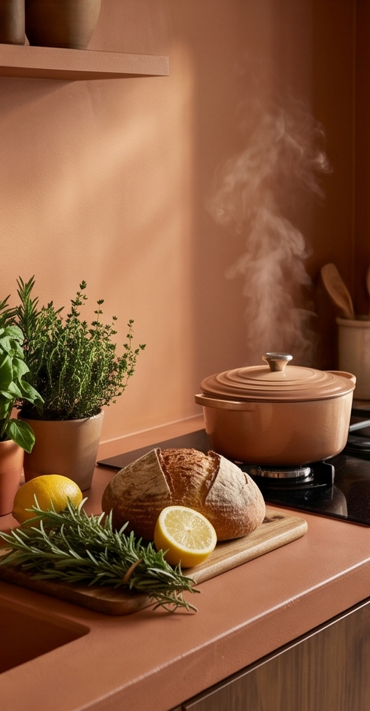
Centro funcional da casa. Onde a vida se divide.
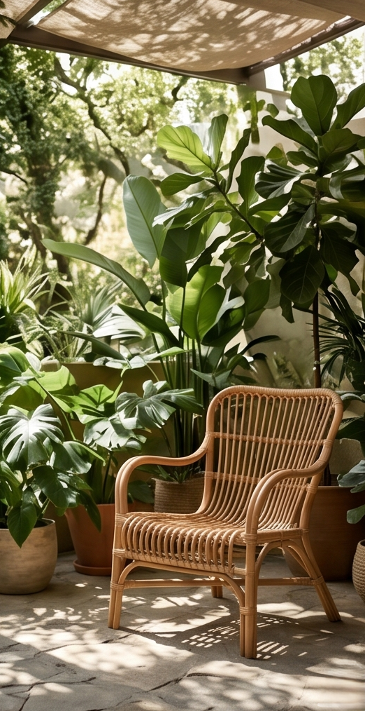
Limite habitado entre dentro e fora.
A Zenon é uma marca de curadoria. Trabalha imóveis e ambientes pelo que comunicam antes do que vendem. Menos itens, mais intenção.
Cada ambiente, projeto e recomendação passa por filtro. Nada entra por inércia.
Texto direto, layout limpo, processo legível. A forma serve à decisão.
Numeração, tom e estilo se repetem em todo material. Nada é descartável.
Toda entrega fica arquivada e rastreável. O que existe, existe por escrito.
Sem formulário. Escolha o canal, escreva uma linha sobre o ambiente ou imóvel, e a conversa começa.